Analiza rješenja · JOI Spring Camp 2020 · Dan 3
Berba
O ovom članku
Tekst je prijevod službene japanske prezentacije rješenja, preoblikovan u članak. Slajdovi su ugrađeni kao slike; natpis pod svakim slajdom je prijevod teksta na njemu. Dijelovi označeni kao trenerska napomena nisu u izvornoj prezentaciji — dodani su da popune korake koje slajdovi preskaču ili samo skiciraju.
Slajdovi
Sažetak i promjena sustava
izvorni slajdovi 1–3
-
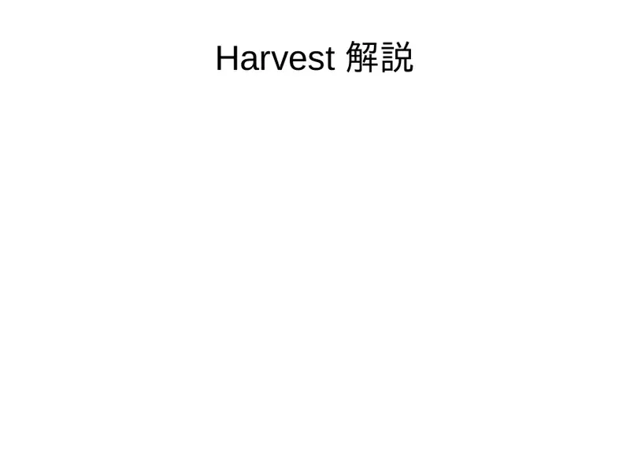
1Naslovni slajd: Harvest. -
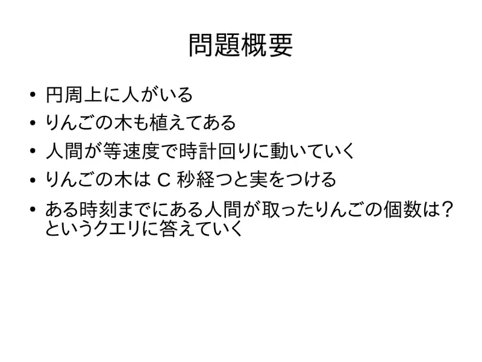
2Sažetak. Ljudi i stabla jabuka na kružnici; ljudi se kreću jednakom brzinom u smjeru kazaljke; stablo daje plod $C$ sekundi nakon berbe. Upiti: koliko je jabuka osoba ubrala do zadanog trenutka? -
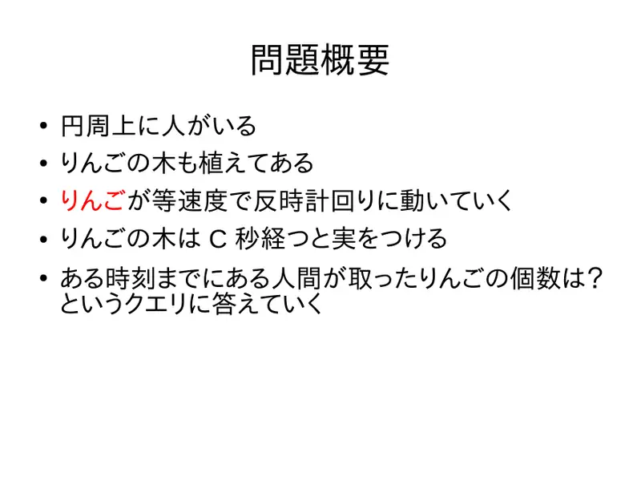
3Isto, ali u sustavu radnika: jabuke se kreću protiv kazaljke, ljudi stoje.
← → tipke ili klik na sliku
Podzadatak 1 5 bodova
Koraci algoritma
Funkcijski graf radnika
izvorni slajdovi 4–8
-
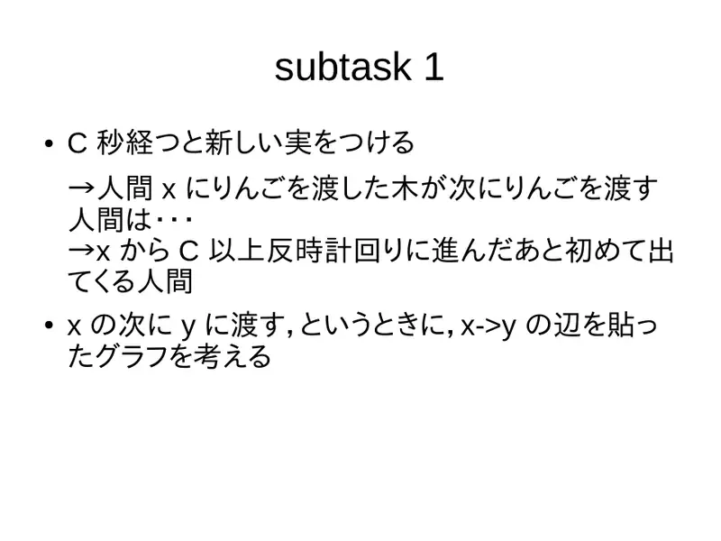
4Nakon što stablo preda jabuku osobi $x$, sljedeću daje prvoj osobi koja se nađe barem $C$ dalje protiv kazaljke od $x$. Nacrtaj brid $x \to y$. -
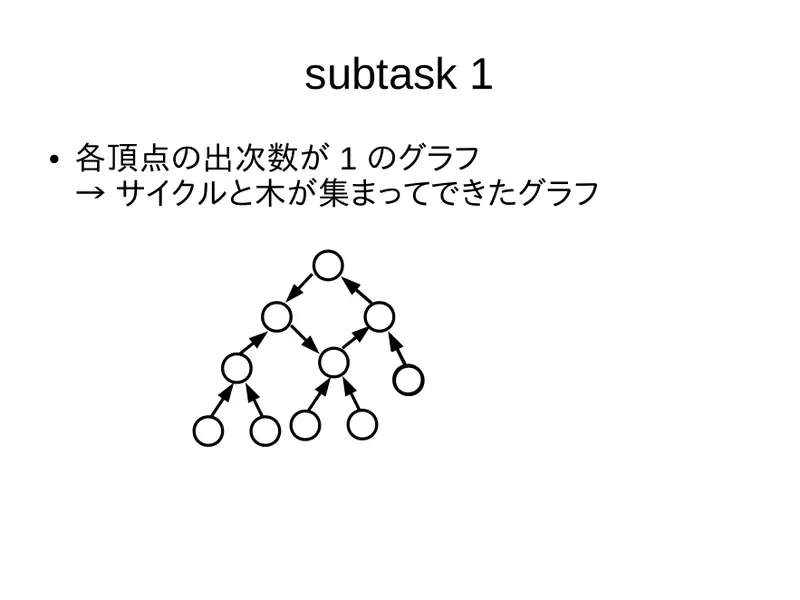
5Svaki vrh ima izlazni stupanj $1$ → graf je skup ciklusa s obješenim stablima. -
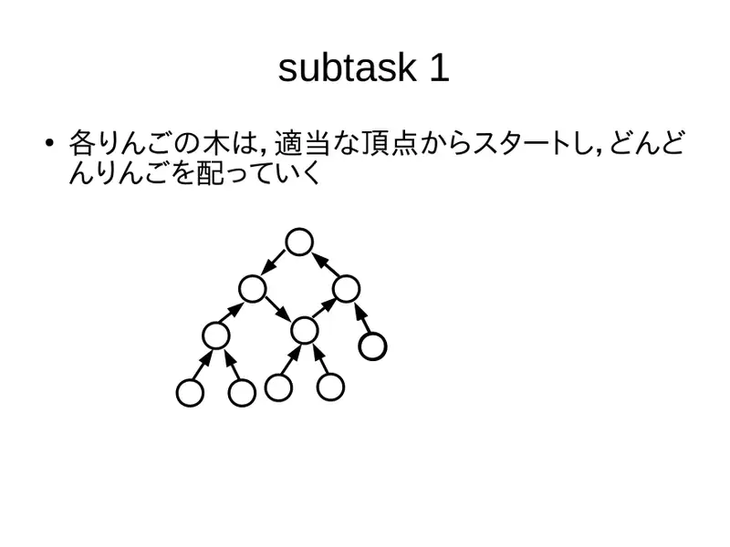
6Svako stablo jabuke kreće iz nekog vrha i „dijeli” jabuke duž bridova. -
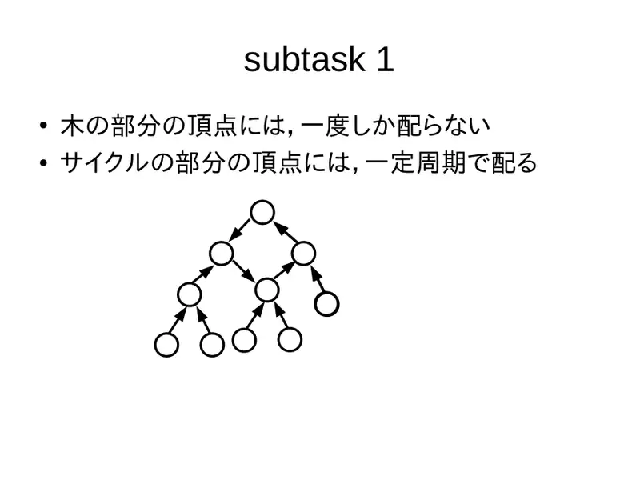
7Vrhove u dijelu stabla posjećuje najviše jednom; vrhove na ciklusu periodički. -
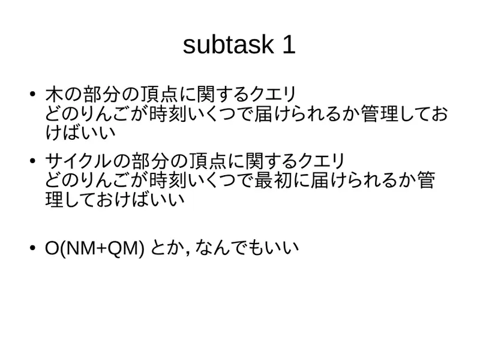
8Upiti za vrhove stabla: zabilježi koja jabuka stiže kada. Za vrhove ciklusa: kada prvi put stiže. $O(NM + QM)$ ili bilo što slično.
← → tipke ili klik na sliku
Podzadatak 2 20 bodova
Koraci algoritma
Ogromno T: sve je već stiglo
izvorni slajdovi 9–16
-
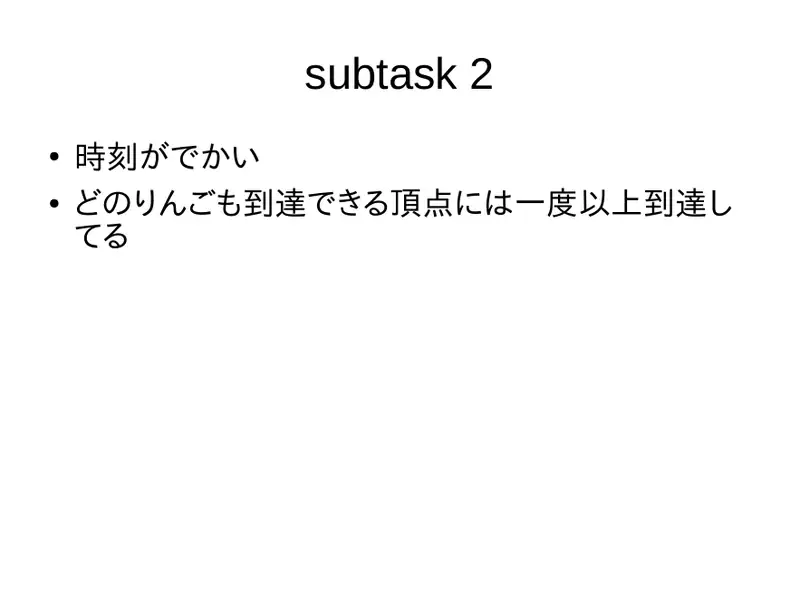
9Vrijeme je golemo: svaka jabuka je već bar jednom posjetila svaki vrh do kojeg može doći. -
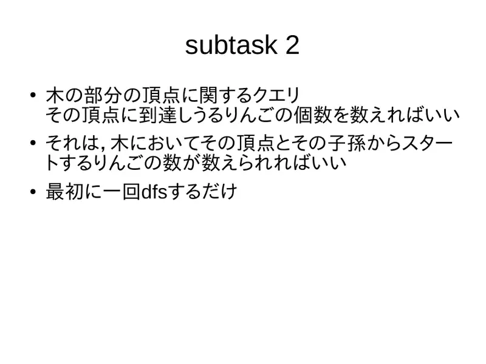
10Upit za vrh stabla: broj jabuka koje mogu doći do njega = broj jabuka koje kreću iz njegova podstabla. Jedan DFS. -
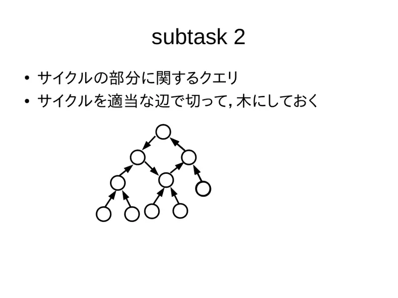
11Upiti za ciklus: prereži ciklus na nekom bridu i pretvori ga u stablo. -
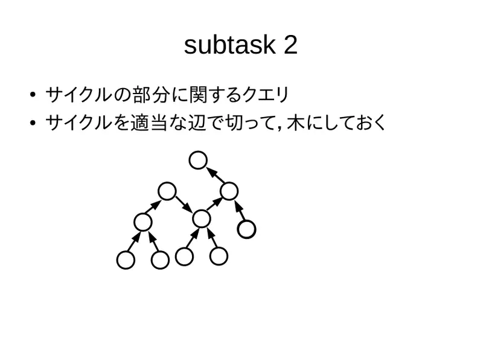
12(Slika reza.) -
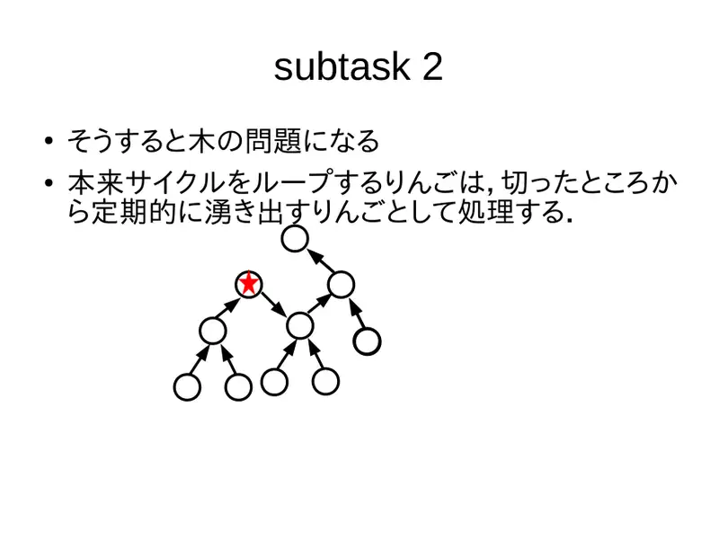
13Sad je sve stablo; jabuke koje bi kružile obrađujemo kao jabuke koje periodički izviru na mjestu reza. -
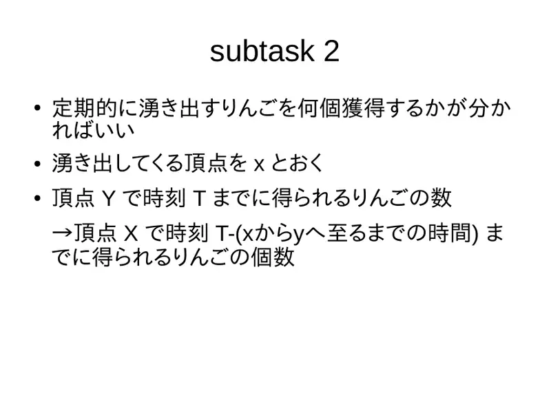
14Treba znati koliko periodičkih jabuka stiže. Neka je $x$ vrh izvora: broj jabuka u vrhu $Y$ do $T$ = broj jabuka u $X$ do $T - (\text{vrijeme od } x \text{ do } y)$. -
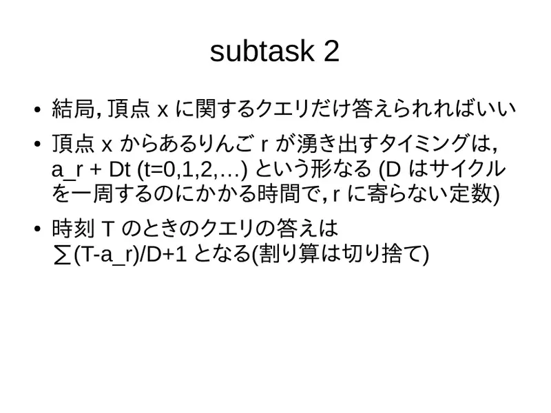
15Dovoljno je odgovarati na upite u vrhu $x$. Jabuka $r$ izvire u trenucima $a_r + Dt$ ($t = 0, 1, \ldots$; $D$ = vrijeme obilaska ciklusa). Odgovor za $T$: $\sum \lfloor (T - a_r)/D \rfloor + 1$. -
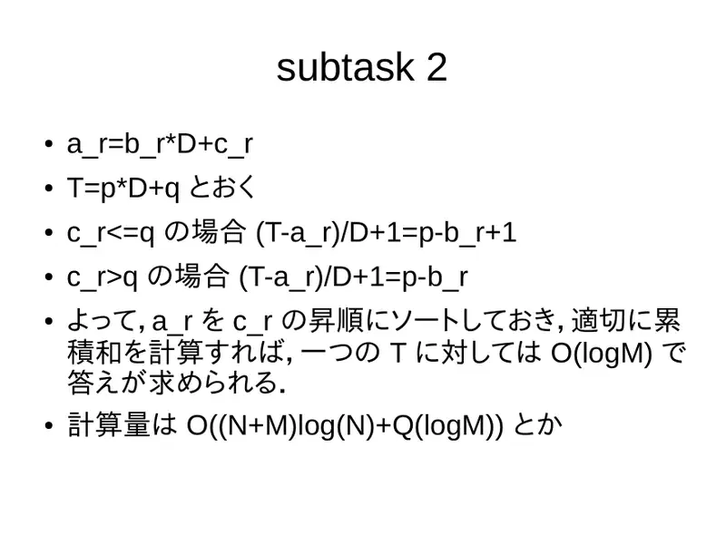
16$a_r = b_r D + c_r$, $T = pD + q$: ako $c_r \le q$ pribrojnik je $p - b_r + 1$, inače $p - b_r$. Sortiraj po $c_r$ i drži prefiksne zbrojeve: $O(\log M)$ po upitu; ukupno $O((N+M)\log N + Q\log M)$.
← → tipke ili klik na sliku
Podzadatak 3 75 bodova
Koraci algoritma
Offline 2D prebrojavanje
izvorni slajdovi 17–22
-
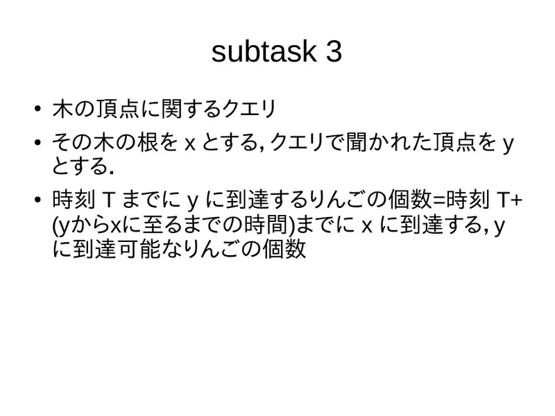
17Vrh stabla $y$ s korijenom $x$: jabuke u $y$ do $T$ = jabuke koje mogu doći do $y$ i stižu u $x$ do $T + (\text{vrijeme } y \to x)$. -
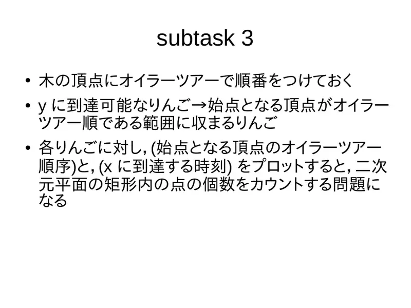
18Numeriraj vrhove Eulerovom turom: „može doći do $y$” = početni vrh u rasponu ture. Za svaku jabuku nacrtaj točku (redni broj početnog vrha, trenutak dolaska u $x$): upit je broj točaka u pravokutniku. -
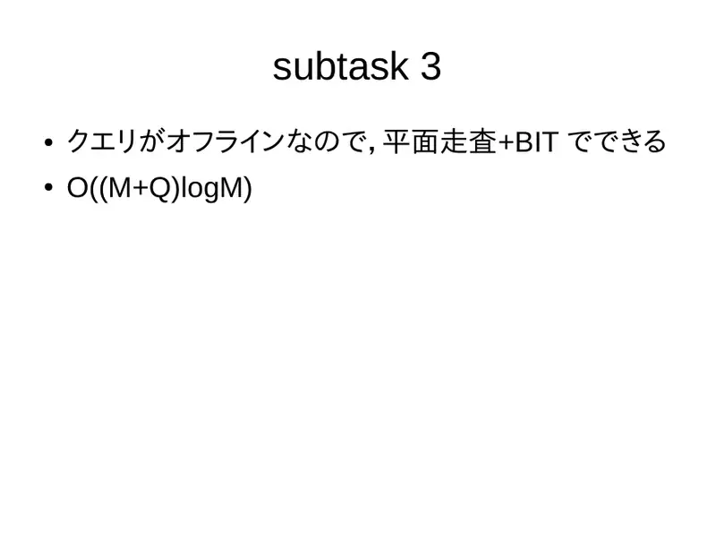
19Upiti su offline → sweep + BIT, $O((M+Q)\log M)$. -
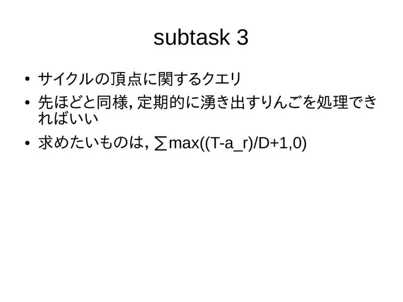
20Vrhovi ciklusa: kao prije obradimo periodičke jabuke; tražimo $\sum \max(\lfloor (T - a_r)/D \rfloor + 1, 0)$. -
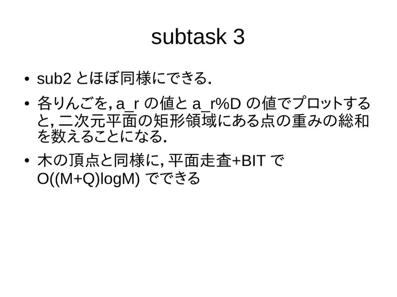
21Kao u podzadatku 2: točke $(a_r, a_r \bmod D)$ s težinama; zbroj težina u pravokutniku — sweep + BIT, $O((M+Q)\log M)$. -
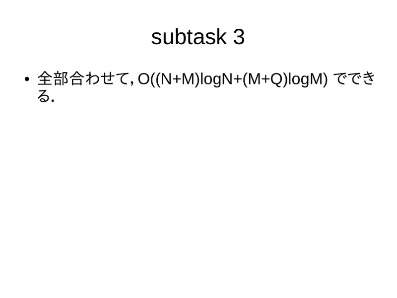
22Sve zajedno: $O((N+M)\log N + (M+Q)\log M)$.
← → tipke ili klik na sliku
Sažetak
- U sustavu radnika stablo predaje jabuke po fiksnom lancu radnika → funkcijski graf s vremenskim težinama.
- Prereži ciklus: jednokratni prolasci = 2D prebrojavanje po Eulerovoj turi; periodički = $\sum \lfloor (T'-a')/D\rfloor + 1$ s rastavom po ostatku.
- Sve offline sa sortiranjem i Fenwickom, $O((N+M+Q)\log)$.